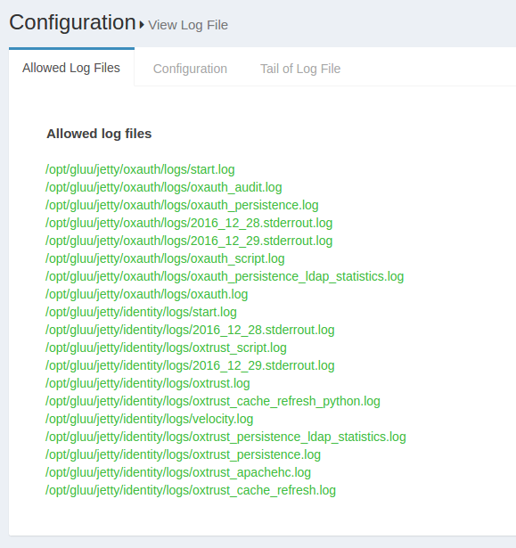
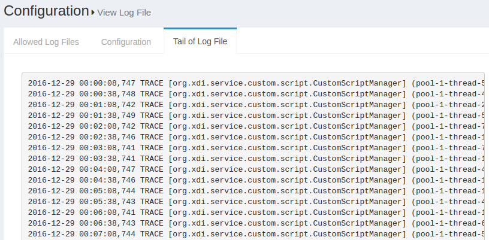

Gluu Server Logs#
When it comes to troubleshooting issues in the Gluu Server-from service hiccups to outages-logs are the best place to start.
The Gluu Server administrator can investigate logs from the oxTrust View Logs feature or directly with SSH access to the Gluu-Server container.
View Log File#
The log files configured in the earlier section can be viewed using the View log file feature. This feature can be accessed through the configuration menu using Configuration --> View Log File.

The Display last lines count field contains the lines that will be displayed in the Web GUI. If the field contains the value 400, then the Gluu Server will show the last 400 lines of the log in the GUI. The screenshot below shows an according example.

Setup Logs#
The setup logs are stored inside the /install/community-edition-setup/ folder. There are two logs available, one detailing the setup process and the other documenting the errors:
- setup.log
- setup_error.log
Core logs#
The available log files for Gluu Server Community Edition inside the chroot environment are listed below.
| Log File | Component |
|---|---|
| /install/community-edition-setup/setup.log | Setup detail log |
| /install/community-edition-setup_/setup_error.log | Setup error log |
| /opt/gluu/jetty/idp/logs/start.log | Logs time-stamp when IDP starts |
| /opt/shibboleth-idp/logs/idp-warn.log /opt/shibboleth-idp/logs/idp-process.log |
IDP diagonostic log Read more.. |
| /opt/shibboleth-idp/logs/idp-audit.log | General audit log Read more.. |
| /opt/shibboleth-idp/logs/idp-consent-audit.log | Consent audit log Read more.. |
| /opt/gluu/node/passport/node_modules/redis-parser/isolate-0x3615b50-v8.log /opt/gluu/node/passport/node_modules/redis-parser/isolate-0x28e7b50-v8.log |
Passport log |
| /opt/gluu/jetty/asimba/logs/start.log | Logs time-stamp when ASIMBA starts |
| /opt/gluu/jetty/oxauth/logs/start.log | Logs time-stamp when oxAuth starts |
| /opt/gluu/jetty/oxauth/logs/oxauth_audit.log | General audit log |
| /opt/gluu/jetty/oxauth/logs/oxauth_persistence.log | Logs connection with LDAP |
| /opt/gluu/jetty/oxauth/logs/oxauth_script.log | Logs for oxAuth custom script execution |
| /opt/gluu/jetty/oxauth/logs/oxauth.log | General log for oxAuth service |
| /opt/gluu/jetty/oxauth-rp/logs/start.log | Logs time-stamp when oxAuthRP starts |
| /opt/gluu/jetty/oxauth-rp/logs/oxauth-rp.log | General oxAuthRP log |
| /opt/gluu/jetty/identity/logs/start.log | Logs time-stamp when oxTrust starts |
| /opt/gluu/jetty/identity/logs/oxtrust_script.log | |
| /opt/gluu/jetty/identity/logs/oxtrust.log | Logs for oxTrust custom script execution |
| /opt/gluu/jetty/identity/logs/oxtrust_persistence.log | Logs connection with LDAP |
| /opt/gluu/jetty/identity/logs/oxtrust_cache_refresh.log | Logs events relating to cache refresh |
| /var/log/openldap/ldap.log | OpenLDAP Log, contains everything related to OpenLDAP |
oxAuth logs#
The oxauth logs contain the information about oxAuth authentication process and errors. The key oxauth logs are
-
oxauth.logunder/opt/gluu/jetty/oxauth/logs/This log is gathering most of the authentication related information. Generally this is the first log to review for any authentication-related troubleshooting, like authentication failure or missing clients etc. Here's an example showing a successful user authentication:2016-07-16 15:43:28,232 INFO [org.xdi.oxauth.auth.Authenticator] Authentication success for Client: '@!EFCB.890F.FB6C.2603!0001!0A49.F454!0008!F047.7275' 2016-07-16 15:43:28,232 TRACE [org.xdi.oxauth.auth.Authenticator] Authentication successfully for '@!EFCB.890F.FB6C.2603!0001!0A49.F454!0008!F047.7275' 2016-07-16 15:43:28,238 DEBUG [xdi.oxauth.token.ws.rs.TokenRestWebServiceImpl] Attempting to request access token: grantType = authorization_code, code = 61ba3c0d-42c4-4f1f-8420-fd5f6707f1b1, redirectUri = https://test.gluu.org/identity/authentication/authcode, username = null, refreshToken = null, clientId = null, ExtraParams = {grant_type=[Ljava.lang.String;@1add2a62, redirect_uri=[Ljava.lang.String;@2e0995b5, code=[Ljava.lang.String;@7743b5af}, isSecure = true, codeVerifier = null 2016-07-16 15:43:28,249 DEBUG [org.xdi.oxauth.service.UserService] Getting user information from LDAP: userId = zico -
oxauth_script.logunder/opt/gluu/jetty/oxauth/logs/Most of the custom script's initialization and few more information are loaded here in this script. In the sample log below we can see 'Super Gluu' 2FA has been loaded in the Gluu Server:2016-07-16 19:06:32,705 INFO [org.xdi.service.PythonService] (pool-2-thread-2) oxPush2. Initialization 2016-07-16 19:06:32,713 INFO [org.xdi.service.PythonService] (pool-2-thread-2) oxPush2. Initialize notification services 2016-07-16 19:06:32,750 INFO [org.xdi.service.PythonService] (pool-2-thread-2) oxPush2. Initialized successfully. oneStep: 'False', twoStep: 'True', pushNotifications: 'False'
oxTrust logs#
-
oxtrust.logunder/opt/gluu/jetty/identity/logsThis log gather logs related to Gluu Server Admin panel (called oxTrust). For example, what is the clientID of an oxTrust session? Or, what scopes are being used, etc. In the example below, you can see an admin user has successfuly logged into thetest.gluu.orgGluu Server admin panel, has the proper authorizationCode, a redirectURI, and the user's role:2016-07-16 16:41:55,690 INFO [org.gluu.oxtrust.action.Authenticator] authorizationCode : 555a7586-6ca2-4b39-ab39-2ac78ec81524 2016-07-16 16:41:55,690 INFO [org.gluu.oxtrust.action.Authenticator] scopes : user_name email openid profile 2016-07-16 16:41:55,691 INFO [org.gluu.oxtrust.action.Authenticator] clientID : @!EFCB.890F.FB6C.2603!0001!0A49.F454!0008!F047.7275 2016-07-16 16:41:55,691 INFO [org.gluu.oxtrust.action.Authenticator] getting accessToken 2016-07-16 16:41:55,691 INFO [org.gluu.oxtrust.action.Authenticator] tokenURL : https://test.gluu.org/oxauth/seam/resource/restv1/oxauth/token 2016-07-16 16:41:55,691 INFO [org.gluu.oxtrust.action.Authenticator] Sending request to token endpoint 2016-07-16 16:41:55,692 INFO [org.gluu.oxtrust.action.Authenticator] redirectURI : https://test.gluu.org/identity/authentication/authcode 2016-07-16 16:41:55,919 DEBUG [org.gluu.oxtrust.action.Authenticator] tokenResponse : org.xdi.oxauth.client.TokenResponse@1914b8d -
oxtrust_script.logunder/opt/gluu/jetty/identity/logs
This log collects information on oxTrust related scripts and their operations. For example, if an organization uses a custom attribute which populates values for every user, then the Gluu Server Administrator needs to use a custom script for their 'Cache Refresh' process. This log will receive information when the custom script runs. -
oxtrust_cache_refresh.logunder/opt/gluu/jetty/identity/logs
Cache Refresh related information such as status, primary failure, etc., is available in this log. In the sample snippet below we see the total number of users that have been synced into the Gluu Server, number of failures, and total number of updated users.2016-07-16 17:18:17,691 DEBUG [gluu.oxtrust.ldap.cache.service.CacheRefreshTimer] (pool-1-thread-9) Updated person '@!EFCB.890F.FB6C.2603!0001!0A49.F454!0000!40EB.AB8E' 2016-07-16 17:18:17,691 INFO [gluu.oxtrust.ldap.cache.service.CacheRefreshTimer] (pool-1-thread-9) Updated '2,002' entries 2016-07-16 17:18:17,722 INFO [gluu.oxtrust.ldap.cache.service.CacheRefreshTimer] (pool-1-thread-9) Failed to update '0' entries 2016-07-16 17:18:17,738 DEBUG [gluu.oxtrust.ldap.cache.service.CacheRefreshTimer] (pool-1-thread-9) Keep external persons: 'true' 2016-07-16 17:18:17,739 DEBUG [gluu.oxtrust.ldap.cache.service.CacheRefreshTimer] (pool-1-thread-9) Count entries '0' for removal from target server 2016-07-16 17:18:17,739 INFO [gluu.oxtrust.ldap.cache.service.CacheRefreshTimer] (pool-1-thread-9) Removed '0' persons from target server 2016-07-16 17:18:17,739 INFO [gluu.oxtrust.ldap.cache.service.CacheRefreshTimer] (pool-1-thread-9) There are '2,002' entries before updating inum list 2016-07-16 17:18:17,740 INFO [gluu.oxtrust.ldap.cache.service.CacheRefreshTimer] (pool-1-thread-9) There are '2,002' entries after removal '0' entries
Log Levels#
Gluu Server logs use the log4j logging levels which can be changed in the log4j.xml file.
The available logging levels are :
| Level | Description |
|---|---|
| ALL | All log levels are documented |
| DEBUG | Detailed events useful to debug application |
| ERROR | Errors are documented |
| INFO | Logs informational messages as the application runs |
| OFF | No logs are recorded |
| TRACE | Logs detailed events; more than DEBUG |
The following files define the log levels in Gluu Server. Please edit the file with the levels given above and restart the jetty server.
The following section is taken from a live Gluu Server log4j.xml file showing different log levels for different logs. The changes made this section will reflect in the logs.
<category name="org.xdi.oxauth">
<priority value="TRACE" />
</category>
<!- ############### Gluu ################# ->
<category name="org.gluu">
<priority value="TRACE" />
</category>
<!- ############### opnexdi ################# ->
<category name="org.openxdi">
<priority value="TRACE" />
</category>
<!- ############### oxTrust ################# ->
<category name="org.gluu.oxtrust">
<priority value="TRACE" />
</category>
<!- ############### Embedded JBoss AS ################# ->
<category name="org.jboss">
<priority value="ERROR" />
</category>
<category name="com.arjuna">
<priority value="ERROR" />
</category>
Please restart the specific service after any change in log levels to allow the changes to take effect. Use the following command to restart tomcat:
System logs#
- For Ubuntu:
/var/log/syslog - For RPM based systems:
/var/log/messages
Web Server logs#
- For Debian:
/var/log/apache2/ - For RPM based systems:
/var/log/httpd/
System Logs#
Sometimes it worthy to check system logs like /var/log/messages. These logs contain global system messages.
Web Server logs#
Apache httpd / apache2 logs are available in /var/log/httpd or /var/log/apache2 for Ubuntu.
-
access_log: This log contains information about requests coming into the Gluu Server, success status or requests, execution time for any request etc. -
error_log: This log shows error messages if the web server encounter any issue while processing incoming requests. -
other_vhosts_access.log: This log is specific to the Gluu Server setup and those links which are being requested by a user from a web browser. An example below:test.gluu.org:443 192.168.201.184 - - [17/Jul/2016:18:25:21 +0000] "GET /index.html HTTP/1.1" 200 13239 "-" "Java/1.7.0_95" test.gluu.org:443 192.168.201.1 - - [17/Jul/2016:18:25:56 +0000] "GET / HTTP/1.1" 302 2185 "-" "Mozilla/5.0 (Windows NT 10.0; WOW64) AppleWebKit/537.36 (KHTML, like Gecko) Chrome/51.0.2704.106 Safari/537.36" test.gluu.org:443 192.168.201.1 - - [17/Jul/2016:18:25:56 +0000] "GET /identity/ HTTP/1.1" 200 583 "-" "Mozilla/5.0 (Windows NT 10.0; WOW64) AppleWebKit/537.36 (KHTML, like Gecko) Chrome/51.0.2704.106 Safari/537.36" test.gluu.org:443 192.168.201.1 - - [17/Jul/2016:18:25:56 +0000] "GET /identity/home.htm HTTP/1.1" 302 272 "https://test.gluu.org/identity/" "Mozilla/5.0 (Windows NT 10.0; WOW64) AppleWebKit/537.36 (KHTML, like Gecko) Chrome/51.0.2704.106 Safari/537.36" test.gluu.org:443 192.168.201.1 - - [17/Jul/2016:18:25:56 +0000] "GET /identity/login?cid=4 HTTP/1.1" 302 474 "https://test.gluu.org/identity/" "Mozilla/5.0 (Windows NT 10.0; WOW64) AppleWebKit/537.36 (KHTML, like Gecko) Chrome/51.0.2704.106 Safari/537.36" test.gluu.org:443 192.168.201.1 - - [17/Jul/2016:18:25:56 +0000] "GET /oxauth/authorize?scope=openid+profile+email+user_name&response_type=code+id_token&nonce=nonce&redirect_uri=https%3A%2F%2Ftest.gluu.org%2Fidentity%2Fauthentication%2Fauthcode&client_id=%40%21EFCB.890F.FB6C.2603%210001%210A49.F454%210008%21F047.7275 HTTP/1.1" 302 450 "https://test.gluu.org/identity/" "Mozilla/5.0 (Windows NT 10.0; WOW64) AppleWebKit/537.36 (KHTML, like Gecko) Chrome/51.0.2704.106 Safari/537.36" -
There are few other logs like
ssl_access_log,ssl_error_log, andssl_request_logwhich are collecting information on port 443 specifically.
Remember the initial GET request will hit the Apache server first, and then be proxied via the AJP port 8009 to tomcat. If you see traffic on the web server, but not on tomcat, this is a good place to check to see if something is wrong. For example, you might want to check if the firewall is blocking port 8009 if you see somthing like this:
[Thu Jul 14 23:49:19 2016] [error] ajp_read_header: ajp_ilink_receive failed
[Thu Jul 14 23:49:19 2016] [error] (70007)The timeout specified has expired: proxy: read response failed from (null) (localhost)
[Thu Jul 14 23:49:20 2016] [error] (70007)The timeout specified has expired: ajp_ilink_receive() can't receive header
[Thu Jul 14 23:49:20 2016] [error] ajp_read_header: ajp_ilink_receive failed
[Thu Jul 14 23:49:20 2016] [error] (70007)The timeout specified has expired: proxy: read response failed from (null) (localhost)
[Thu Jul 14 23:49:20 2016] [error] (70007)The timeout specified has expired: ajp_ilink_receive() can't receive header
[Thu Jul 14 23:49:20 2016] [error] ajp_read_header: ajp_ilink_receive failed
[Thu Jul 14 23:49:20 2016] [error] (70007)The timeout specified has expired: proxy: read response failed from (null) (localhost)